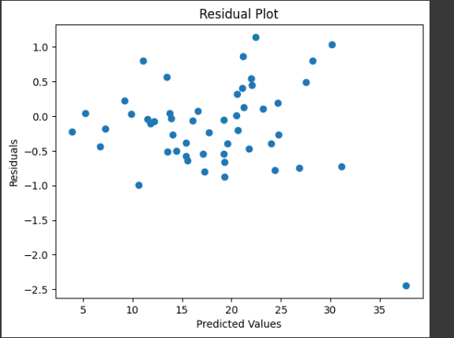

| Name | Website |
|---|---|
| Python | python.org |
| Wireshark | wireshark.org |
| Burp Suite | portswigger.net |
| Linux | linux.org |
In four years, I see myself working as a penetration tester, specializing in web application security. I aim to contribute to protecting organizations from cyber threats by identifying and fixing vulnerabilities. I also plan to pursue certifications like OSCP and CEH to enhance my skills. My goal is to become a recognized cybersecurity expert and continue growing in the field of ethical hacking.